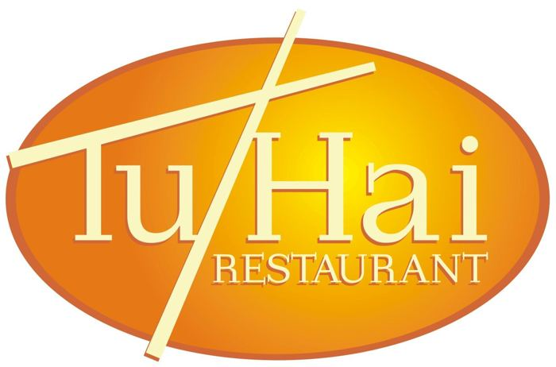
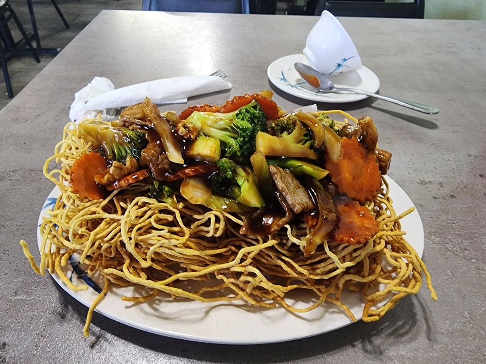
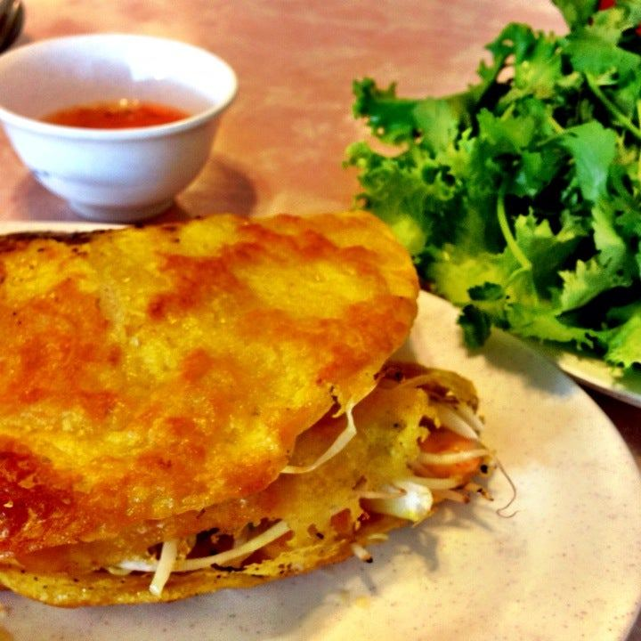
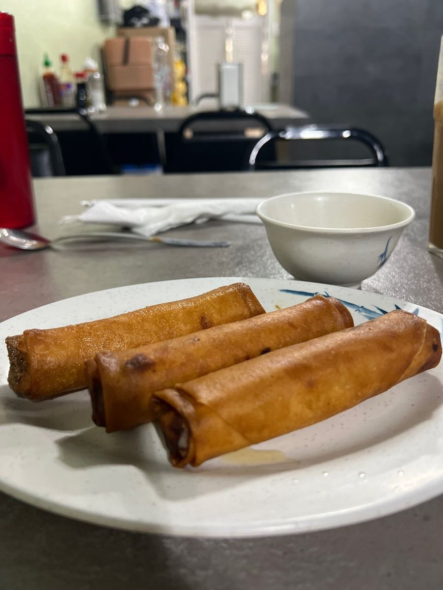
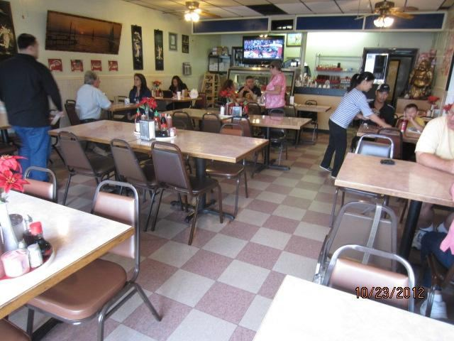

Pho, crispy noodles, egg rolls and stir-fries, serving Fort Worth since 1986.




Plenty of options, with meat and without. Small, friendly, and easy on the wallet. Come in for lunch or dinner, Monday through Saturday.
“Inexpensive and authentic. The pho was really good!”Restaurantji review
“Cute little place with delicious food! Has plenty of options, both with meat and without.”Restaurantji review
“A nice little local gem. If your tummy craves Asian, this is the place to go.”Restaurantji review
Mon–Sat 11 AM–7:30 PM
Sunday closed
per public listing; confirm current hours
Plenty of options with meat and without.